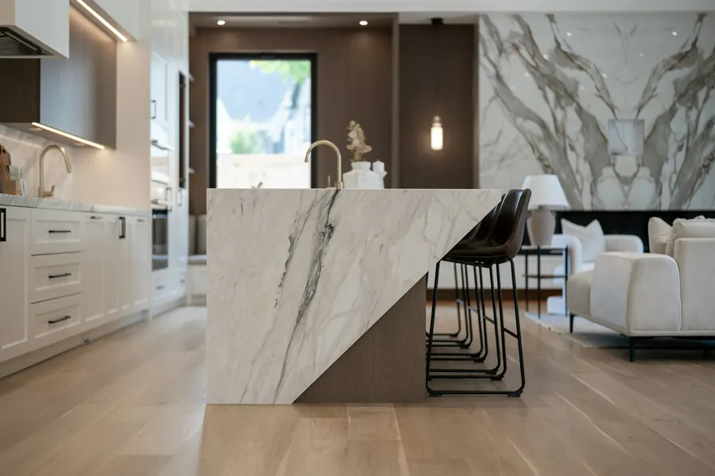
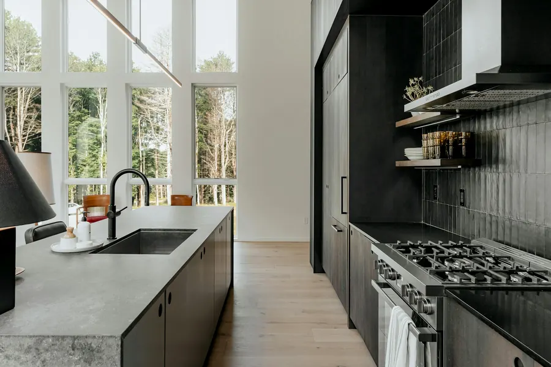

التصميم ثلاثي الأبعاد
تصميم واقعي بالألوان والخامات المختارة، مع إجراء التعديلات اللازمة قبل اعتماد التصنيع.
فيوتشر كيت · الرياض
تقدم فيوتشر كيت خدمات تصميم المطابخ وتصنيعها وتركيبها في مدينة الرياض، وفق تصميم ثلاثي الأبعاد يعتمده العميل قبل البدء، وعرض سعر مفصل بالبنود ومدة التنفيذ.

تصميم ثلاثي الأبعاد بالخامات والألوان المختارة
تصنيع الوحدات وفق رسومات تنفيذية معتمدة
تركيب في الموقع ومراجعة شاملة قبل التسليم
عن الشركة
فيوتشر كيت جهة متخصصة في تصميم المطابخ وتصنيعها وتركيبها في مدينة الرياض، وتجمع مراحل المشروع كافة لدى فريق واحد، بدءا من رفع المقاسات وانتهاء بالتسليم.
نعتمد في كل مشروع على دراسة احتياجات العميل وطبيعة المساحة، ثم نقدم تصميما ثلاثي الأبعاد بالخامات والألوان المقترحة، ولا يبدأ التصنيع إلا بعد اعتماد التصميم والرسومات التنفيذية وعرض السعر.
مجالات العمل
تصميم واقعي بالألوان والخامات المختارة، مع إجراء التعديلات اللازمة قبل اعتماد التصنيع.
خزائن علوية وسفلية ووحدات طولية مصنعة على مقاس الموقع، بخامات مقاومة للرطوبة والحرارة.
توريد وتركيب أسطح الكوارتز والبورسلان والرخام الطبيعي، مع تفصيل الحواف والفتحات في الموقع.
وحدات طولية للمؤن والأجهزة الصغيرة، مع منظمات داخلية للأدراج ووحدات الزوايا.
تخطيط أماكن الأجهزة المدمجة، وتوريدها وتركيبها عند طلب العميل.
إضاءة LED أسفل الخزائن وداخل الأدراج والخزائن الزجاجية، مع حساسات حركة.
استبدال الواجهات أو الأسطح أو إعادة تصميم المطبخ بالكامل حسب حالته.
زيارة الموقع في الرياض لأخذ المقاسات وتحديد مخارج الكهرباء والسباكة والتهوية.
المجموعات
خمس مجموعات رئيسية، تخصص كل منها بحسب الخامات والألوان والمقابض والإضاءة التي يختارها العميل.

خطوط مستقيمة وأسطح واسعة بلا فواصل، مع جزيرة في وسط المطبخ. مناسبة للمطابخ المفتوحة على الصالة.
| الواجهات | أكريليك أو لاكر مطفي |
|---|---|
| الأسطح | بورسلان أو كوارتز بعروق |
| المقابض | شريط معدني رفيع أو مخفية |

تفاصيل كلاسيكية بلمسة حديثة: أبواب بإطار بسيط، وألوان عميقة مثل الأخضر والمريمي، ومقابض ذهبية مطفية.
| الواجهات | خشب مدهون بإطار |
|---|---|
| الأسطح | كوارتز أبيض أو رخام |
| المقابض | نحاسي أو ذهبي مطفي |

واجهات بدون مقابض ظاهرة تفتح بمجرى «جولا» أو بنظام الضغط، مع أجهزة مدمجة داخل وحدات طولية.
| الواجهات | قشرة خشب أو PET مطفي |
|---|---|
| الأسطح | بورسلان بسماكة 12 ملم |
| طريقة الفتح | مجرى جولا أو الضغط |

قشرة خشب طبيعي مع أسطح فاتحة وإضاءة سفلية هادئة، لمن يفضل الطابع الدافئ في المطبخ.
| الواجهات | قشرة بلوط أو جوز |
|---|---|
| الأسطح | كوارتز فاتح |
| الإضاءة | LED أسفل الخزائن العلوية |

ألوان داكنة مثل الفحمي والأخضر العميق، مع حجر طبيعي وإضاءة مركزة تبرز الخامات.
| الواجهات | لاكر مطفي داكن |
|---|---|
| الأسطح | جرانيت أو حجر طبيعي |
| المقابض | أسود مطفي أو مخفية |
الخامات المعتمدة
تعرض عينات فعلية لكل خامة على العميل في مرحلة الاعتماد.
| الخامة | الاستخدام | أبرز المزايا | ملاحظات العناية |
|---|---|---|---|
| لاكر مطفي | الواجهات | لون عميق بأي درجة، وملمس ناعم | يمسح بقطعة قماش ناعمة ومنظف لطيف |
| قشرة خشب طبيعي | الواجهات | عروق خشب حقيقية وملمس دافئ | يبعد عن الرطوبة المباشرة |
| أكريليك عالي اللمعان | الواجهات | سطح لامع سهل التنظيف | تتجنب المنظفات الكاشطة |
| كوارتز | الأسطح | مقاوم للبقع والخدوش | تتجنب الأواني الساخنة مباشرة |
| بورسلان | الأسطح | يتحمل الحرارة العالية، وألواح كبيرة بلا فواصل | تنظيف يومي اعتيادي |
| رخام طبيعي | الأسطح | عروق فريدة لا تتكرر | يحتاج معالجة دورية ضد البقع |
منهجية العمل
التعرف على احتياجات العميل وطريقة استخدام المطبخ والأسلوب المفضل.
زيارة الموقع لأخذ المقاسات الدقيقة وتحديد مخارج الكهرباء والماء والتهوية.
تقديم المخطط والمناظير ثلاثية الأبعاد، وإجراء التعديلات حتى الاعتماد.
اعتماد العينات وتقديم عرض سعر مفصل بالبنود ومدة التنفيذ.
تصنيع الوحدات وفق الرسومات التنفيذية المعتمدة، مع إطلاع العميل على المراحل.
التركيب في الموقع، ومراجعة جميع الأبواب والأدراج مع العميل قبل التسليم.
المخططات
يحدد شكل المطبخ المسافة بين الثلاجة والمغسلة والموقد. اختر المخطط لمعرفة الحالات التي نرشحه فيها.
| نرشحه عندما | |
|---|---|
| ميزته الأهم | |
| ننتبه إلى |
النماذج
صور توضيحية للأساليب والخامات التي ننفذها.
الاستفسارات
يعتمد السعر على الطول الإجمالي للوحدات، ونوع خامة الواجهات والهيكل، ونوع السطح، والإكسسوارات مثل الأدراج الداخلية والإضاءة. وبعد رفع المقاسات واعتماد التصميم يستلم العميل عرضا مفصلا بكل بند.
نعم. نقدم تصميما ثلاثي الأبعاد بالألوان والخامات المختارة، ولا يبدأ التصنيع إلا بعد الاعتماد النهائي للتصميم والرسومات.
تختلف المدة بحسب حجم المطبخ ونوع الخامات وتوفرها، وتحدد كتابيا في عرض السعر قبل البدء.
الأكريليك لامع وسهل التنظيف، واللاكر يعطي لونا مطفيا عميقا بأي درجة، وقشرة الخشب الطبيعي تمنح دفئا وملمسا حقيقيا. وتعرض العينات على العميل لاختيار الأنسب.
نعم، يمكن استبدال الواجهات أو الأسطح فقط، أو إعادة تصميم المطبخ بالكامل، ويقيم الوضع الحالي في زيارة الموقع.
نعم، نخطط أماكن الأجهزة في التصميم، ويمكننا توريدها وتركيبها عند الطلب، أو تركيب أجهزتك الحالية بعد مطابقة مقاساتها.
التواصل
يسعدنا استقبال طلبكم، وسيتواصل معكم فريقنا لتحديد موعد الزيارة.